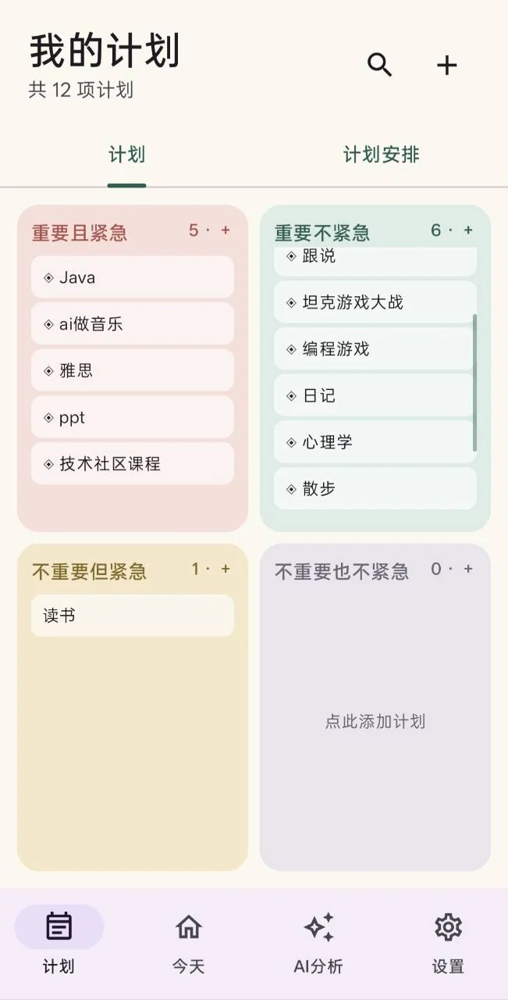
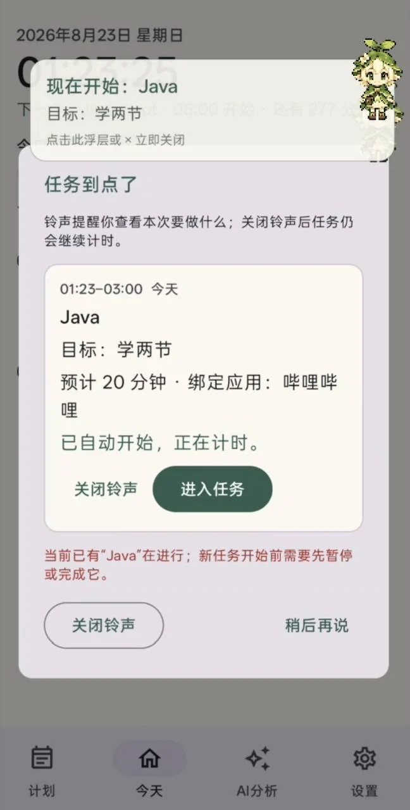
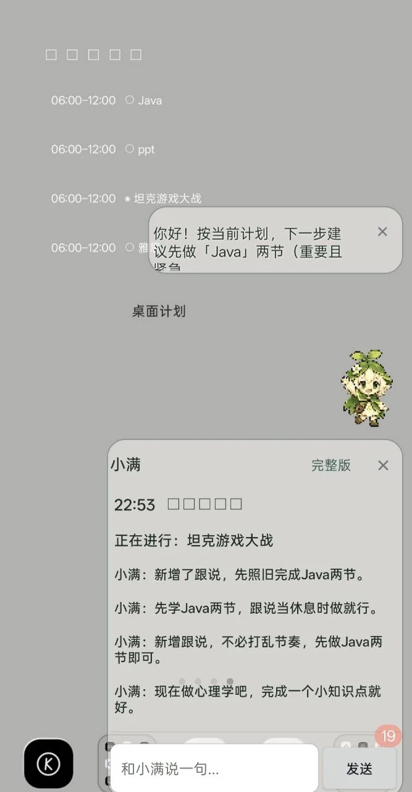
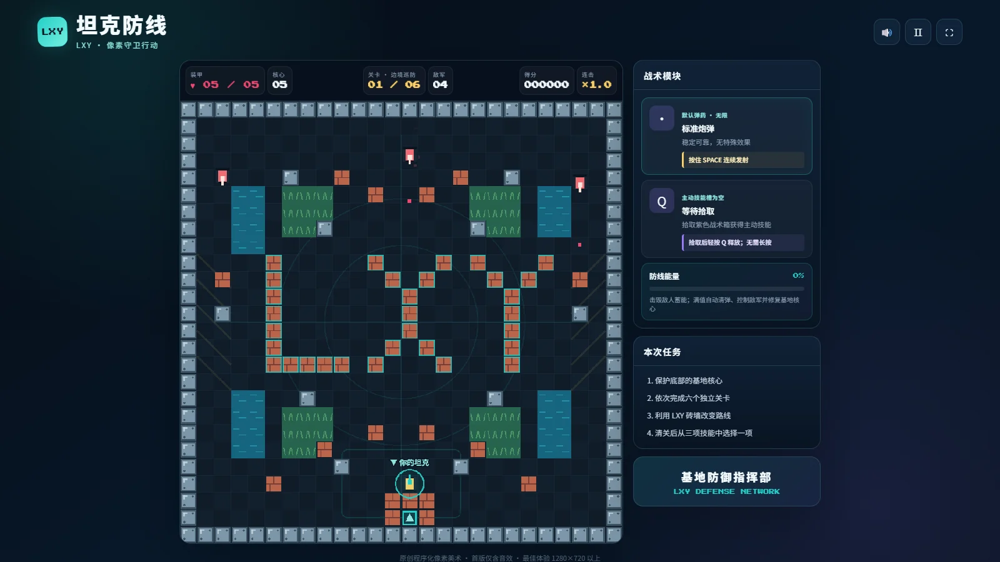
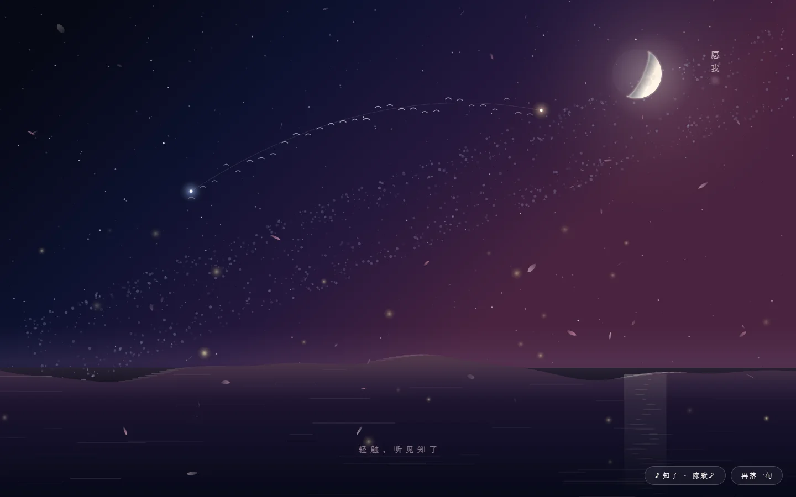
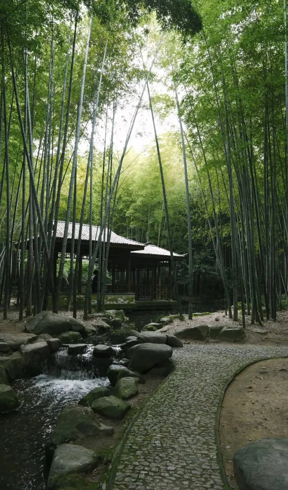

心理学
对积极心理学比较感兴趣，也愿意和别人聊聊相关话题。
最愿意深入交流对积极心理学比较感兴趣，也愿意和别人聊聊相关话题。
最愿意深入交流了解一些 AI 与 Agent 相关知识，会借助工具把想法尝试做成软件、游戏或网页。
边使用，边理解喜欢游戏设计，也在尝试把自己的点子做成可以体验的小游戏。
创意与交互喜欢安静地进入另一个世界，也喜欢电影、角色和当时的自己共同留下的记忆。
光影与故事读过一些自助类书，也翻过心理学和哲学入门，小说读得不算多。
慢慢阅读喜欢旋律与歌词构成的意境，也喜欢歌曲承载过去时光的感觉。
旋律与记忆这是我为数不多能放开打的运动，虽然水平一般，但很享受过程。
放松与运动会制作 PPT，喜欢把零散的信息和画面整理得更清楚一些。
信息与表达这些作品都在 AI 的帮助下完成。我负责提出想法、确认需求和体验方向，再一点点测试、调整和完善。



我做了一款叫「刚刚好」的 Android App，是我借助 AI 从想法一步步做成的完整软件。目前已经完成开发、测试和 APK 打包，可以直接安装使用。
它是一款计划管理类 App，主要有两个我很看重的特点：

在 AI 帮助下完成的网页版像素坦克游戏。玩家需要守护核心，完成六个关卡，并利用不同地形和技能对抗敌人。

在 AI 帮助下完成的七夕主题网页。银河、上弦月、水面倒影、流萤与竖排诗句一起构成了这幅动态画面。
在了解 AI 相关内容的过程中完成的课程和认证。点击任意证书，可以查看完整原图。

我大概是个欣赏和品味的人。 我喜欢看动漫，喜欢看那些角色在既定的世界观里展开属于自己的生命历程——或是探索存在的意义，或是沉浸于世俗的欢愉。我也喜欢看电影，尤其喜欢去电影院。去电影院是一场仪式，两个小时的光影流动，加上来回路上的思考，足以把我整个人的状态重新拉回正轨。
说来也怪，我读书时感受到的那种安静，看动漫和电影时也能体验到。一个安安静静、不争吵的自己，安详地欣赏着另一个世界。这种安静让我能听到内心的声音，和阅读时别无二致。更让我着迷的，电影和动漫能让我在平淡的现实生活中一样经历轰轰烈烈的人生，填补许多现实中从未体验过的情感。
不过有一个“副作用”：有时候短时间内追完一部动漫，特别是一个人熬夜追漫，就会陷入一种巨大的失落感——像去了另一个世界，与许多人结缘，历经世事，走了一遭红尘。回到现实后，却只有自己记得这一切。像黄粱一梦，又恍如隔世。
但时间久了之后，我发现真正牵动我的，往往不再是剧情本身。当我回想某部电影时，脑海中浮现的更多是：当时的我在做什么，怀着怎样的心情，身边坐着谁。于是我觉得，欣赏这件事的价值，有时并不全在于被观看的事物，也在于此时此刻的环境、陪在身边一起看的人、以及那个特定时刻的自己。它们之所以珍贵，是因为它们是记忆的载体。
同样，我也喜欢听歌。旋律与歌词构筑的意境，能让我自然地进入一种别样的状态。好听的歌和动漫一样，也承载着过去的时光。
运动方面，羽毛球是我为数不多能放开打的，虽然水平一般。篮球总有些放不开，网球小时候没接触过，足球和乒乓球更是不太会玩。
阅读上，小说读得不多，但我读过不少自助类的书，也翻过一些心理学和哲学入门。对积极心理学挺感兴趣的。
高考结束后，我意外地喜欢上了以前很抗拒的诗歌。以前只觉得散文美，诗歌读不懂也欣赏不来。现在发现诗歌真的好美——美在语言，美在意境，美在感受。不过可悲的是我读得少，很多还读不懂。
对于这个世界，过去我觉得美只存在于自然里：落日、日出、山水、动物。我那时忽略了人。我觉得每个人都像是从另一个世界来的灵体，来此旅游一番，彼此由世俗关系牵定，除此之外再无美丽可言。后来我学会把人看成风景——看一个人喜欢什么、关心什么、如何面对生活中的种种，看人们如何平衡人性与文明。慢慢地，人也成了我眼里的景。
这是这份个人主页从创建至今，安静留下的一点时间记录。
匿名唯一访客
按中国日期更新
访问数据连接中…